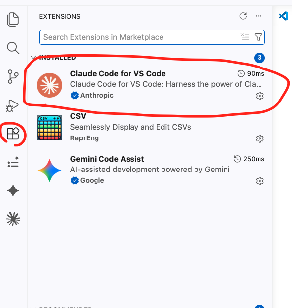
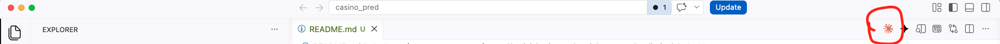
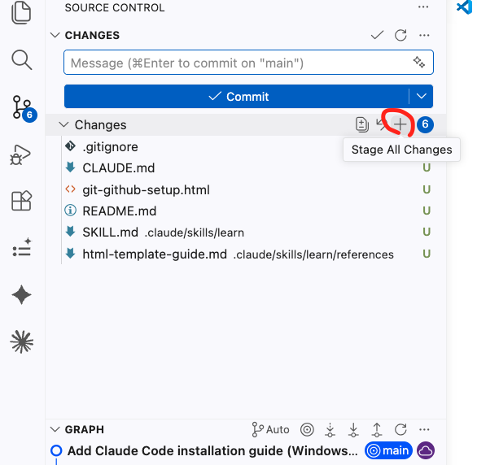
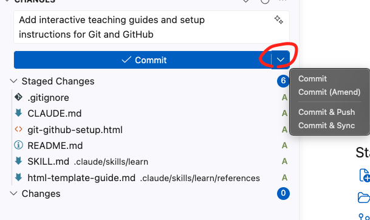
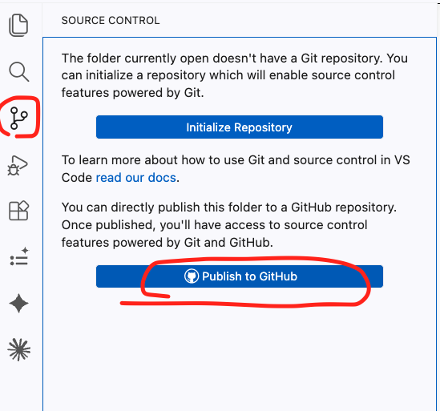
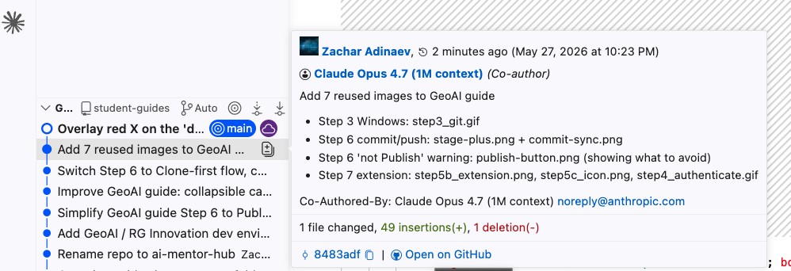

חלק 1 · התקנות
6 שלבים · ~25 דקות
חלק 1 · התקנות
1
חשבון GitHub + הצטרפות לארגון של הקורס
כ-5 דקות
חשבון GitHub + הצטרפות לארגון של הקורס
עקבו אחרי השלבים:
- גשו ל-github.com/signup.
- הירשמו עם המייל שאיתו אתם רשומים בקורס — זה המייל שאליו אנחנו שולחים את ההזמנה לארגון ואת רישיון Anthropic.
- בחרו username מקצועי — זה נשאר איתכם הרבה שנים, אז להימנע מ-
cool_dude_2003. - אשרו את המייל שיגיע מ-GitHub.
- פתחו את ההזמנה לארגון שתגיע במייל — היא נראית: "@ZacharAdn has invited you to join @Geo-AI-Course". לחצו על הלינק ואשרו.
- וודאו שאתם רואים את github.com/Geo-AI-Course בחשבון שלכם.
⚠️ למה דווקא המייל הרשום בקורס?
ℹ️ עוד לא קיבלתם הזמנה?
2
התקנת VS Code (סביבת הפיתוח)
כ-5 דקות
התקנת VS Code (סביבת הפיתוח)
עקבו אחרי השלבים:
- גשו ל-code.visualstudio.com/download
- בחרו את הגרסה למערכת ההפעלה שלכם (Mac / Windows / Linux) ולחצו Download.
- פתחו את קובץ ההתקנה מתיקיית ההורדות. Windows: Next-Next-Next. Mac: גוררים את האייקון לתיקיית Applications.
- פתחו את VS Code לפעם הראשונה. אפשר לסגור את ה-Welcome.
💡 הכרת הפאנלים
Ctrl+` (בק-טיק).
3
התקנת Git
כ-5 דקות
התקנת Git
בחרו את מערכת ההפעלה שלכם:
🪟 Windows
- גשו ל-git-scm.com/download/win — ההורדה תתחיל אוטומטית.
- פתחו את קובץ ההתקנה והריצו אותו.
- Next-Next-Next — ברירות המחדל בסדר. חשוב: במסך "Adjusting your PATH" — בחרו "Git from the command line and also from 3rd-party software".
- סיימו את ההתקנה.

🍎 Mac
- פתחו טרמינל (Spotlight → Terminal). הקלידו:
xcode-select --install - ייפתח דיאלוג של Apple — לחצו Install וחכו לסיום (3-5 דק').
🐧 Linux
- פתחו טרמינל. Ubuntu/Debian:
sudo apt install git. Fedora:sudo dnf install git
4
אימות — האם Git באמת מותקן?
כ-1 דקה
אימות — האם Git באמת מותקן?
עקבו אחרי השלבים:
- פתחו את VS Code (אם עוד לא פתוח).
- פתחו את הטרמינל הפנימי —
Ctrl+`(בק-טיק, התו מעל ה-Tab). - הקלידו:
git --version - צריך לקבל משהו כמו
git version 2.43.0(המספר עשוי להשתנות).
⚠️ אם קיבלתם command not found
xcode-select --install הסתיים. Windows: סגרו את VS Code, פתחו אותו מחדש — אם עדיין לא עובד, restart למחשב כדי שה-PATH יתעדכן.
5
קונפיגורציית Git — שם ומייל
כ-2 דקות
קונפיגורציית Git — שם ומייל
עקבו אחרי השלבים:
- בטרמינל הפנימי של VS Code, הקלידו (החליפו "השם שלך" בשם שלכם):
git config --global user.name "השם שלך" - אחר כך, הקלידו (החליפו במייל שאיתו נרשמתם ל-GitHub):
git config --global user.email "your-email@example.com" - בדיקה — שתי השורות תופיעו ב:
git config --global --list
💡 למה --global?
--global אומר ל-Git להחיל את ההגדרה על כל ה-repos במחשב — פעם אחת לכל החיים, לא צריך לחזור על זה לכל פרויקט.⚠️ המייל חייב להתאים ל-GitHub
6
התקנת Claude Code Extension
כ-5 דקות
התקנת Claude Code Extension
עקבו אחרי השלבים:
- קודם כל — וודאו שקיבלתם הזמנה ל-Anthropic Team במייל (זכר שלח). לחצו על הלינק במייל ואשרו רישום.
- ב-VS Code: לחצו על אייקון ה-Extensions בצד שמאל (4 ריבועים) או
Cmd/Ctrl + Shift + X. - בשורת החיפוש למעלה — חפשו "Claude Code".
- בחרו את ה-extension הראשון (של Anthropic, סימן וי כחול ליד השם) ולחצו Install.
- אחרי ההתקנה תראו את ה-icon של Claude בעורך — אבל רק אחרי שתפתחו קובץ כלשהו (README, CSV, או כל קובץ אחר). פתחו קובץ קיים מ-Explorer, או צרו חדש (File → New File), והאייקון יופיע מיד.
- לחצו על האייקון — VS Code יבקש מכם להתחבר. תאשרו, הוא יפתח דפדפן עם דף Anthropic, תאשרו, חוזרים ל-VS Code.
- לסשן חדש:
Cmd/Ctrl + Escאו לחצו על ה-icon של Claude.


💡 @-mention להקשר
@ ולבחור קובץ — והסוכן יקרא אותו כהקשר. דוגמה: @README.md תכתוב לי FEATURE_PLAN.md לפי הפרויקט הזה.💡 פרומפט ממוספר
תכתוב README:
1. שיהיה באנגלית
2. שיכלול את הסעיפים: Problem, Target Users, Data Source, ML Approach
3. שורת תיאור אחת בהתחלה⚠️ אם הסוכן הציע פקודה לטרמינל
git push: תעדיפו לעשות commit + push דרך ה-Source Control GUI כדי שאתם בשליטה, לא הסוכן.
7
הגדרות מתקדמות — API key, פרטיות, אובייקטיביות
~5 דקות · אופציונלי
הגדרות מתקדמות — API key, פרטיות, אובייקטיביות
🔑 מפתחות API ($25 גיבוי) — יישלחו במייל במהלך השבוע
במהלך השבוע נשלח לכם מפתח API של Anthropic ישירות במייל (יחד עם הזמנת ה-Team). זה ה-גיבוי: עבודה יומיומית על מנוי Claude Team, וכשמגיעים לתקרת ה-usage (שעה/שבוע) — מפעילים את ה-API key.
⚠️ ההקצאה שלכם: $25 לחודש קשיח (per workspace). זה נשרף מהר ממה שחושבים — יכול להיגמר תוך פחות מסשן עבודה של 5 שעות אם עובדים אינטנסיבית. שימו לב.
איך מפעילים — 3 צעדים בטרמינל (לא צריך להיכנס לאף אתר):
- קחו את ה-key מהמייל שתקבלו (נראה
sk-ant-api03-...). - פתחו את הטרמינל הפנימי של VS Code (
Ctrl+`) והדביקו:export ANTHROPIC_API_KEY=sk-ant-api03-XXXX... - פתחו סשן Claude Code חדש. מהרגע הזה — האימות מול ה-API שלכם, וכל שימוש שחורג מה-Team ייגבה מ-$25 הסל.
בדיקת usage בכל זמן: בתוך סשן Claude Code הקלידו /cost — תראו כמה דולרים נצרכו.
💡 (אופציונלי) לקבע את ה-API key לטרמינלים עתידיים
לא חובה. בלי הצעד הזה, ה-export תקף רק לטרמינל הנוכחי — כשתפתחו טרמינל חדש תצטרכו לחזור על השורה. אם אתם משתמשים ב-API key באופן קבוע, נוח לקבע אותו:
Mac / Linux: פתחו את ~/.zshrc (או ~/.bashrc) והוסיפו את שורת ה-export בסוף הקובץ. הפעילו טרמינל חדש, או הריצו:
source ~/.zshrcWindows: Search → "Environment Variables" → New System Variable → Name: ANTHROPIC_API_KEY → Value: ה-key שלכם. סגרו ופתחו מחדש את VS Code.
🔒 לבטל איסוף שיחות לאימון Claude
כברירת מחדל, השיחות שלכם עם Claude עשויות לשמש לשיפור המודל. אם אתם עובדים עם דאטה רגיש (חברה / לקוחות / סודי):
- היכנסו ל-claude.ai ולחצו על אייקון הפרופיל (פינה ימנית-עליונה).
- Settings → לשונית Privacy.
- כבו את "Help improve Claude".
מהרגע הזה — השיחות שלכם נשארות פרטיות ולא ישמשו לאימון.
🎯 לקבל ביקורת אמיתית — להוריד את החנפנות
זו לא נטייה ייחודית של Claude — כל ה-LLMs נוטים להסכים עם המשתמש ולהחמיא (sycophancy). הדרך למזער את זה ב-Claude — שתי אפשרויות:
- בתוך שיחה עם Claude Code: תגידו לו לזכור את ההנחיה למטה תמיד — הוא יוסיף אותה ל-CLAUDE.md הגלובלי שלכם, וזה ישפיע על כל הסשנים העתידיים.
- ב-claude.ai או Claude Desktop: Settings → General → Instructions for Claude → הדביקו את ההנחיה.
ההנחיה (להעתקה):
Never tell me what I want to hear.
I want you to look at things objectively,
contradict me when needed.
If you think otherwise, go with your strong opinion.
חלק 2 · בחירת פרויקט + Push ראשון
שני סעיפים · ~15 דקות
חלק 2 · בחירת פרויקט + Push ראשון
2.1
בחירת פרויקט + דאטה
~5 דקות לחשיבה
בחירת פרויקט + דאטה
שלוש הרמות:
- Descriptive — מתאר נתונים. EDA, dashboards, מפות. דוגמה: מפה של תאונות דרכים לפי אזור.
- Predictive — חוזה עתיד. מודל ML שמנבא תוצאות. דוגמה: ניבוי איפה תאונות עתידיות יקרו.
- Prescriptive — סוכן שעושה פעולות. מערכת אוטונומית שפועלת לטובת המטרה. דוגמה: שליטה ברמזורים בזמן אמת למניעת תאונות.
💡 איזה רמה לבחור?
ℹ️ צריכים עזרה במציאת רעיון או דאטה?
💡 קריטריונים לדאטה טוב
- גיאוגרפי — קואורדינטות, גבולות, או מיקום מהותי לבעיה.
- מספיק שורות — לפחות כמה מאות לרמה 1, אלפים+ לרמה 2.
- אתם יכולים להסביר את המטרה — אם אתם לא יודעים מה אתם רוצים מהדאטה, גם הסוכן לא יידע.
2.2
הפוש הראשון לארגון
~10 דקות
הפוש הראשון לארגון
שלב 0 — לוודא שיש לכם repo בארגון:
- היכנסו ל-github.com/Geo-AI-Course ובדקו אם יש לכם שם repo מוכן (זכר עשוי להקים מראש לכל זוג).
- אין לכם repo? בדף הארגון, לחצו על הכפתור הירוק New repository (פינה ימנית-עליונה). שם תיאורי (לדוגמה
geoai-project-tlv-bike-flow), בחירה Public/Private לפי הנחיית זכר, סמנו Add a README file, ולחצו Create repository.
Clone — להוריד את ה-repo למחשב:
- בדף ה-repo ב-
Geo-AI-Course, לחצו על הכפתור הירוקCode→ העתיקו את ה-HTTPS URL. - ב-VS Code:
Cmd/Ctrl + Shift + P→ הקלידו "Git: Clone" → הדביקו את ה-URL. - בחרו תיקיית יעד במחשב (Desktop / Documents — מה שנוח).
- כשהורדה הסתיימה, לחצו Open Folder. התיקייה תיטען ב-Explorer.
עריכה + commit + push דרך ה-GUI:
- פתחו את
README.mdב-Editor (אם אין — צרו חדש: File → New File, שמרו כ-README.md). - הוסיפו שורה: שם הפרויקט + משפט תיאור.
- שמרו (
Cmd/Ctrl + S). - פתחו את Source Control (אייקון הענף בצד שמאל). תראו את README תחת Changes.
- לחצו על + ליד הקובץ — Stage.
- בשדה הטקסט למעלה — כתבו הודעת commit (למשל:
docs: add project description). - לחצו ✓ Commit.
- לחצו 🔄 Sync Changes — זה Pull + Push.
- רעננו את דף ה-GitHub בדפדפן — הקובץ אמור להופיע ✅


⚠️ Clone — לא Publish!
Cmd/Ctrl + Shift + P וחפשו את "Git: Clone" במדויק.

⚠️ אין לי הרשאת יצירת repos בארגון
Geo-AI-Course — אם הארגון לא מופיע כבעלים אפשרי, סימן שעוד לא קיבלתם הרשאה. בקשו מזכר להוסיף אתכם — הוא יוסיף בלייב במהלך הסדנה.⚠️ דחפתי בטעות לחשבון הפרטי שלי — מה עכשיו?
איך מזהים — שתי דרכים:
- URL בדפדפן: אם הוא
github.com/<your-username>/...במקוםgithub.com/Geo-AI-Course/...— ה-repo נחת בחשבון הפרטי שלכם. - מ-VS Code ישירות (ללא דפדפן): בפאנל Source Control, רחפו עם העכבר מעל הקומיט האחרון בגרף → המתינו ~3 שניות → ייפתח tooltip עם פרטי הקומיט וכפתור Open on GitHub. לחיצה תפתח את ה-repo בדפדפן — תראו מיד היכן הקומיט נחת.

הקבצים שכתבתי לא בסכנה: ה-Clone של ה-repo הנכון יוצר תיקייה חדשה לגמרי במחשב. התיקייה הישנה שלכם (עם ה-README שכתבתם) נשארת שלמה — שום דבר לא נמחק.
איך מתקנים (הדרך הקלה — מומלץ):
- היכנסו ל-repo הפרטי ב-GitHub → Settings → Danger Zone → Delete this repository (מקלידים את שם ה-repo לאישור).
- בדף הארגון Geo-AI-Course, יוצרים repo חדש (כפי שמתואר בשלב 0 למעלה).
- ב-VS Code:
Cmd/Ctrl + Shift + P→ "Git: Clone" ל-תיקייה חדשה (לא לתיקייה הישנה!). - העתיקו את ה-README (וקבצים נוספים) מהתיקייה הישנה לתיקייה החדשה שנוצרה ב-Clone.
- Source Control: Stage → Commit → Sync. ה-README שלכם עולה ל-repo הנכון בארגון ✅
אלטרנטיבה (Transfer): ב-Settings של ה-repo הפרטי → Transfer ownership → הקלידו Geo-AI-Course. חוסך את צעדי 3-4, אבל דורש שתבדקו אחרי שה-remote של ה-repo המקומי שלכם הצביע לארגון.
💡 בפעם הראשונה — אימות GitHub
חלק 3 · המטרה למפגש הבא
שלושה דברים שצריכים להיות ב-repo עד המפגש הבא
חלק 3 · המטרה למפגש הבא
המפגש הראשון הקים לכם את הסביבה. עד המפגש הבא, ה-repo שלכם תחת Geo-AI-Course צריך להכיל את שלושת אלה:
-
README.md — שמתאר:
- מה הפרויקט שלכם — בעיה, משתמשים, ערך
- איך אתם מתכננים להשתמש בכלים שאלי לימד (GeoPandas, CRS, spatial joins כמו ST_DWithin / Intersects / Distance)
-
CLAUDE.md — מסמך הנחיות לסוכן Claude עם ההקשר של הפרויקט. נוצר אוטומטית על ידי הפקודה
/initבתוך סשן Claude Code (פקודות סלאש נכנסות עם/בתחילת השורה). -
הדאטה שאתם הולכים להשתמש בו — רצוי בפורמט CSV (לא חובה, גם פורמטים אחרים בסדר). אם הדאטה חסוי / פרטי של החברה שלכם — אל תעלו אותו ל-GitHub. במקום זה, ציינו ב-README:
- מקור הדאטה (חברת X, סקרים פנימיים, וכו')
- מבנה — אילו עמודות, סוגי נתונים, גודל משוער
- סטטוס "פרטי, לא ניתן להעלאה" — כדי שזכר ידע מה לא יראה ב-repo
נתקעתם? כאן עוזרים:
- 🙋בסדנה — בקשו מזכר שיעבור אליכם
- 📧מייל לזכר: zachar.adn@gmail.com
- 💬WhatsApp לזכר: 050-353-3080